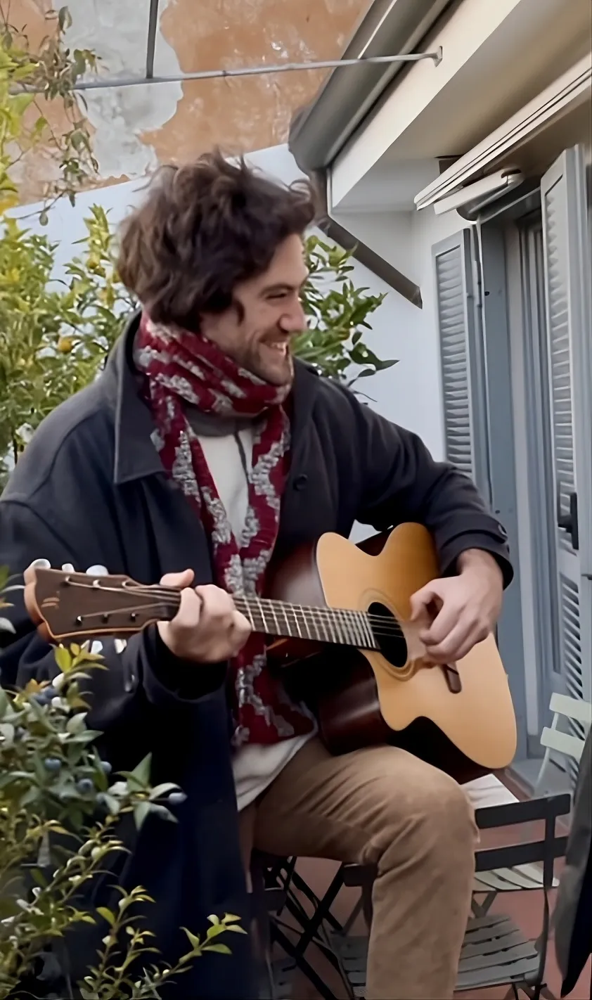
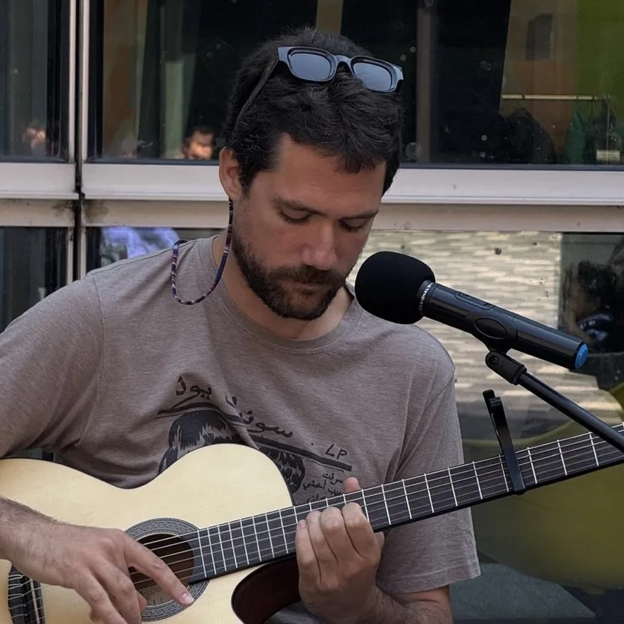

I teach piano and guitar in students’ homes across London, to children from four and adults at any level. We start improvising in the first week.
Tap a key to play.Click a key, or use A S D F G H J K on your computer keyboard.
What I teach
We start with the music you like.
Jazz, rock, pop, soul, funk or R&B: tell me what you listen to and that’s what we learn first.
-
01
Piano
Pop chords, jazz improvisation and classical technique. I prepare students for ABRSM grades, including ABRSM Jazz Piano, if and when they want to take them.
-
02
Guitar
Acoustic or electric, beginner or advanced. I specialise in rock and jazz improvisation, fingerstyle and groove, and I’d rather you found your own style than copied tabs note for note.
-
03
Theory & musicianship
Harmony, ear training, rhythm and sight reading, learnt at the instrument and not from a workbook. We start with scales and can go as far as jazz harmony.
-
04
Production & composition
I also teach production and composition in Ableton Live and Logic, and creative coding for music in Max/MSP. It’s the same software I use for my sound design work.
-
05
Workshops for schools & groups
An introduction to rhythm and playing together, for a class or a group of children. It’s based on the band sessions and group songwriting I’ve run with children and teenagers.
Enquire about a workshop for your school →

Hello, I’m Nico.
I’m a pianist, guitarist, composer and sound designer based in London. I grew up in Milan, where I started on guitar and played on the city’s folk scene. In London I studied Piano Performance & Production at LCCM, then did a Master’s in Sound Design at the University of Edinburgh.
When I’m not teaching, I’m usually playing gigs or working on music and sound for films. A lot of what I bring to lessons comes from there: the harmony, the improvising and knowing my way around a studio.
I’ve been teaching for over ten years, most of it with young children, and I’ve been playing for more than twenty. I teach anyone from the age of four, adults included, usually in their own homes and sometimes online. Grades are there for students who want them: ABRSM, Rockschool or ABRSM Jazz.
I remember my own first years on guitar: chord changes that took weeks, and stretches when nothing seemed to move. After ten years of teaching I know most beginners hit the same walls, so I plan lessons with them in mind. The students who enjoy the playing along the way are the ones who keep practising, and that’s what gives steady progress.
- BA Piano Performance & Production, LCCM
- MSc Sound Design, University of Edinburgh
- Enhanced DBS checked
- Lessons in English or Italian
How I teach
Reading music is up to you.
No set syllabus
In the free trial we talk about what you want to play, and I plan the lessons from there. Graded exams are part of the plan only if you want them. With children, the lesson follows the child.
Groove and feel first
Harmony and timing don’t depend on notation, so we start with your ears and hands. Theory comes in when it explains something you’re already playing.
Improvisation from the first week
Even with three notes, a beginner can make up a few bars over a groove. Jazz and rock improvisation is where I’m happiest as a musician.
Wrong notes are fine
Playing in front of someone feels awkward at first, especially as an adult. In lessons we work on what to do when it goes wrong: how to keep going after a slip, and how to get through a piece without stopping, so a wrong note doesn’t freeze you halfway through a performance.
What families say
★★★★★
“I cannot thank you enough for all you have done for Seth. You have inspired a love of music, and huge advancement in his piano skills. He looks forward to your sessions, and it has been wonderful to have you in his life as a positive influence.”
Tamara G. Mother of Seth, 9. Piano, Richmond. Google review
★★★★★
“He managed to reignite my son’s interest in learning. He uses playfulness and humour to make practising more fun.”
Katharina Mother of Oskar, 13. Guitar, East London. Google review
★★★★★
“Nico is a great teacher. His relaxed teaching style makes you feel at ease whilst learning. Our daughter always enjoys his lessons!”
Lucy Mother of Pearl, 11. Piano, Clapham
★★★★★
“He was creative, engaged, enthusiastic and passed this on to our boys. He taught them the enjoyment of piano alongside theory and reading.”
Mark H. Father of Winston & Finley, both 10. Stepney Green
Lessons & rates
What lessons cost.
From £40
Lessons last 30, 45 or 60 minutes, in person or online. I confirm your rate after the free trial.
Start with a free trial
The first session is free and you’re not committing to anything. We talk about what you want to play and where you’re starting from, and you get a feel for how I teach. By the end you’ll have a lesson plan written for you.
How the rate is set
It depends on the length of the lesson, the time of day and where we meet. Daytime lessons between 8am and 3pm at my studio in Stepney Green cost less.
Lesson packages
Pay for four or more lessons in advance and each lesson costs less. You also get:
- Help on WhatsApp between lessons
- Video tutorials and homework recordings
- First choice of lesson times
Cancellations. Please give at least 48 hours’ notice to cancel or move a lesson. I’ll always try to find another time in the same week. If we can’t find a slot within seven days, you lose that lesson.
Where I teach
In your home, at my studio or online.
My studio is in Stepney Green, E1 3HU.
- RichmondRichmond, Kew, Twickenham and nearby.
- ClaphamClapham, Clapham North and South, Brixton and south-west London.
- East LondonBethnal Green, Hackney, Bow, Whitechapel and Mile End.
- Tower Hill & the CityTower Hill, Aldgate, Shoreditch and the City, for lessons before or after work.
- Central LondonSoho, Marylebone, Fitzrovia, Islington and the rest of central London, handy if you’d like a lesson near work or school.
- OnlineLessons from anywhere, with notes and chords shown on screen.
Questions I get asked
Do I need to be able to read music?
No. You can learn to play, improvise and understand harmony by ear and with chord shapes, without reading a note. If you want to read sheet music too, I’ll teach you, with an approach that’s easier to pick up than the traditional one.
Do you teach children? From what age?
Yes. Most of my students are children, and I teach them from the age of four. With the youngest I follow their lead, with games and songs at the piano before we get to anything that looks like an exercise. I’m enhanced DBS checked. For under-fours I also run early years music sessions: get in touch and tell me a little about your child.
Do you teach ABRSM or Rockschool grades?
Yes. I prepare students for ABRSM piano exams, including ABRSM Jazz Piano, and for Rockschool guitar and piano grades. Exams are optional, and plenty of my students never take one.
Do you offer online lessons?
Yes. Over the years I’ve built a setup for online lessons with good audio and video, and I can show notes and chords on screen while we play. It means you can have lessons wherever you are.
Do I need my own instrument?
Yes. You need one to practise between lessons, wherever we have them. At my studio in Stepney Green you play my instruments during the lesson. I can tell you what to buy or rent on any budget.
How often should I have lessons?
Once a week suits most students: it keeps the momentum going and stops bad habits building up between lessons. Some advanced students have two a week, and fortnightly can work for adults who practise a lot on their own.
What’s included in a lesson package?
If you pay for four or more lessons in advance, each lesson costs less. You also get help on WhatsApp between lessons, video tutorials when you need them, homework recordings made for you and first choice of lesson times.
What’s your cancellation policy?
Please give at least 48 hours’ notice to cancel or move a lesson. I’ll always try to find another time in the same week. If we can’t find a slot within seven days, you lose that lesson. The earlier you tell me, the easier it is to move.
Book your free trial lesson.
A few details are enough. I’ll reply with a day and time for a free trial lesson at your home, at my studio or online.
- Monday to Saturday, 8am to 8pm.
- Studio: Stepney Green, E1 3HU
